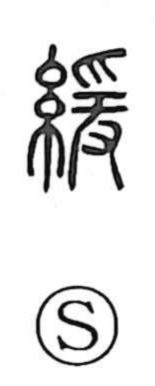

緩

Uncategorized
Kun: yurui, yuruyaka, yurumu, yurumeru | On: kan
slack ・ slow ・ loose ・ to loosen
Explanation
A phono-semantic graph, 緩 combines 糸, “thread,” with 爰 as its phonetic. In ancient form, 爰 depicts an object being pulled from above and below by both hands, carrying the sense of “to pull.” Set beside the thread radical, the character evokes drawing out or handling thread in a moderated, gentle way—loosening tension, hence “slack” and by extension “slow.” Shirakawa links this to textile work: in contrast with 素, the undyed white portion left in a bundle after dyeing, 緩 suggests the deliberate, unhurried treatment of threads. From this image of moderated pull arises the broader sense of easing, loosening, and going gently.